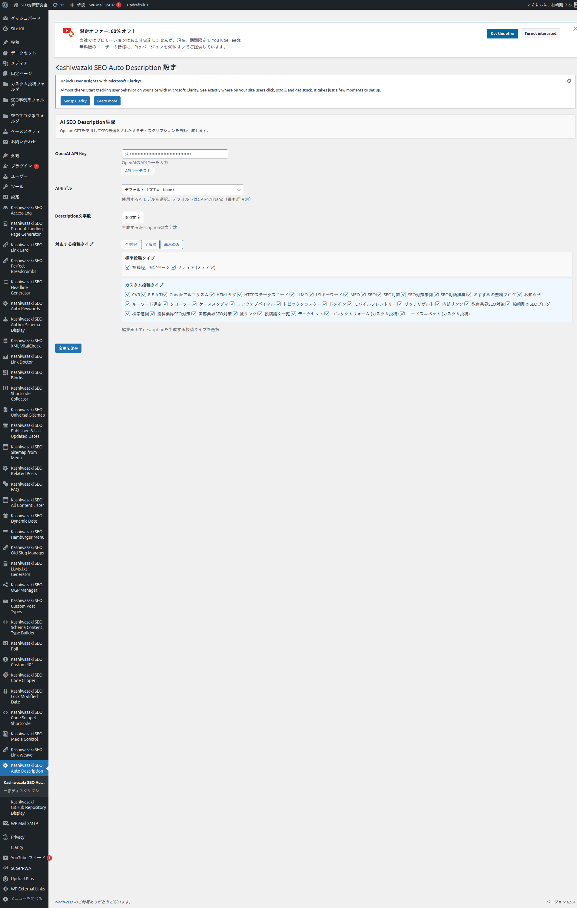
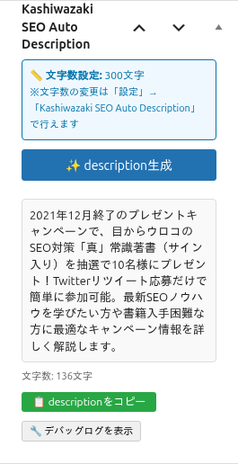

インストール・初期設定
プラグインのインストールから初期設定まで、ステップバイステップで解説します。
インストール手順
1
プラグインファイルを /wp-content/plugins/ にアップロード
2
WordPress管理画面「プラグイン」から有効化
3
左メニューに「Kashiwazaki SEO Auto Description」が追加される
メニューは管理画面左サイドバーの「Kashiwazaki SEO Auto Description」からアクセスできます。
管理画面の構成

OpenAI APIキーの設定
1
https://platform.openai.com/ でOpenAIアカウントを作成
2
APIキーを発行（sk-で始まる文字列）
3
設定画面の「OpenAI API Key」欄にAPIキーを貼り付け
4
「APIキーテスト」ボタンをクリックして接続を確認
5
「設定を保存」をクリック
APIキーは外部に漏らさないでください。APIの利用には従量課金が発生します。
AIモデルの選択
| モデル | 特徴 | コスト |
|---|---|---|
| GPT-4.1 Nano | 最も経済的。基本的な品質 | 最低 |
| GPT-4.1 Mini | コストパフォーマンスが良い | 中 |
| GPT-4.1 | 高性能。最高品質 | 最高 |
デフォルトのGPT-4.1 Nanoで十分な品質が得られます。高品質が必要な場合はGPT-4.1を選択してください。
Description文字数の設定
80〜500文字から選択できます（デフォルト150文字）。SEOの観点から、検索結果に表示される文字数に合わせて設定してください。
対応する投稿タイプの選択
チェックボックスで、ディスクリプション生成を有効にする投稿タイプを選択できます。投稿・固定ページ・カスタム投稿タイプ・メディアに対応しています。
投稿編集画面のメタボックス

メタボックスの使い方
1
投稿の編集画面を開く
2
「Kashiwazaki SEO Auto Description」メタボックスを確認
3
「✨ description生成」ボタンをクリック
4
AI生成されたディスクリプションが表示される
5
「📋 descriptionをコピー」でクリップボードにコピー